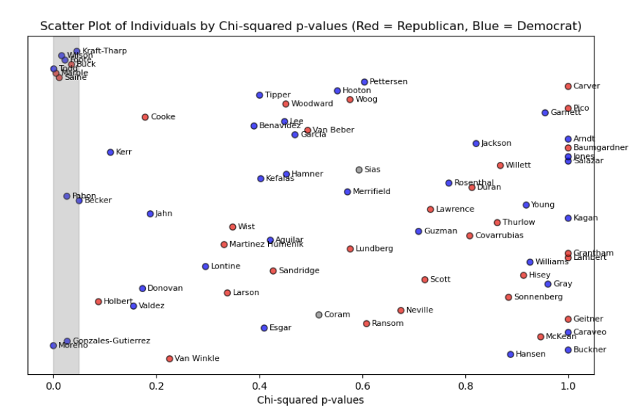

Data Source: Publicly available data from the Colorado General Assembly website, encompassing all bills introduced between the 2016 and 2024 legislative sessions.
Data Collection: Information collected for each bill included the Bill Number, Name, Summary, Subjects, Sponsors, Committees, and Status. For example, HB16-1005, concerning residential precipitation collection, was analyzed for its sponsors and committee assignment.

Analysis: The study involved examining patterns in bill sponsorship to identify significant differences in legislative behavior between term-limited and non-term-limited legislators. The analysis also compared these patterns between Democratic and Republican lawmakers.
Key Finding: The research indicated that lawmakers approaching the end of their terms introduce bills at rates that defy expectations, with this trend being more common among Democrats than Republicans.